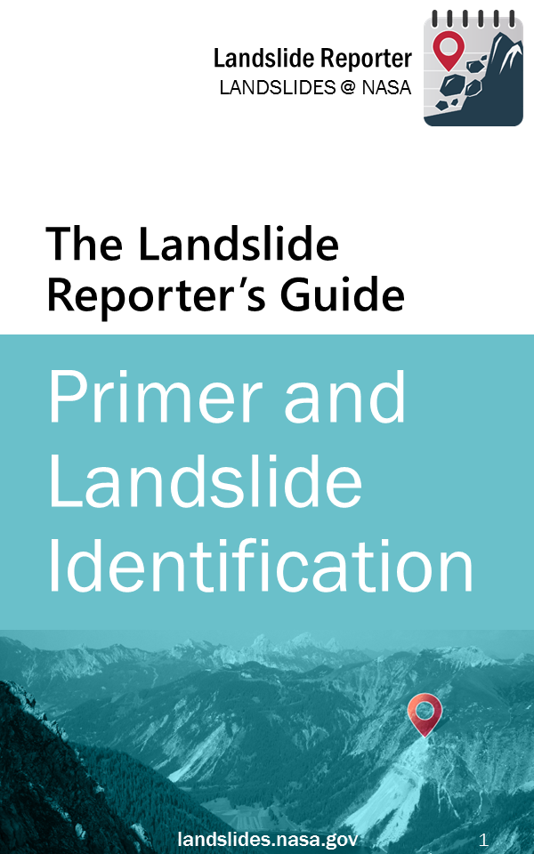
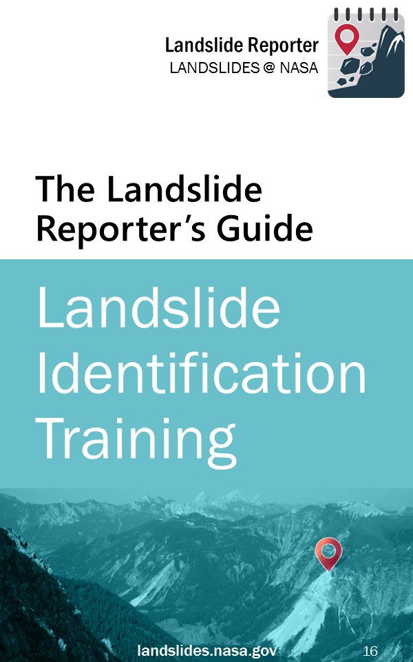
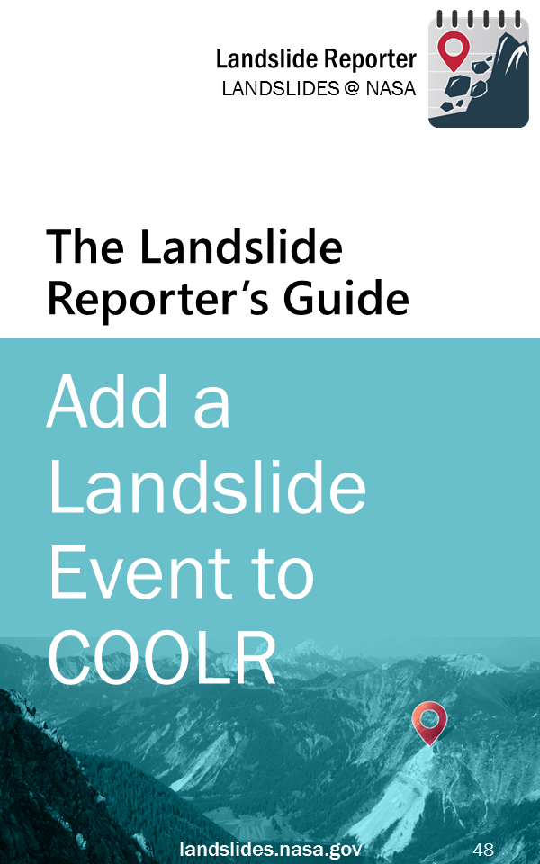
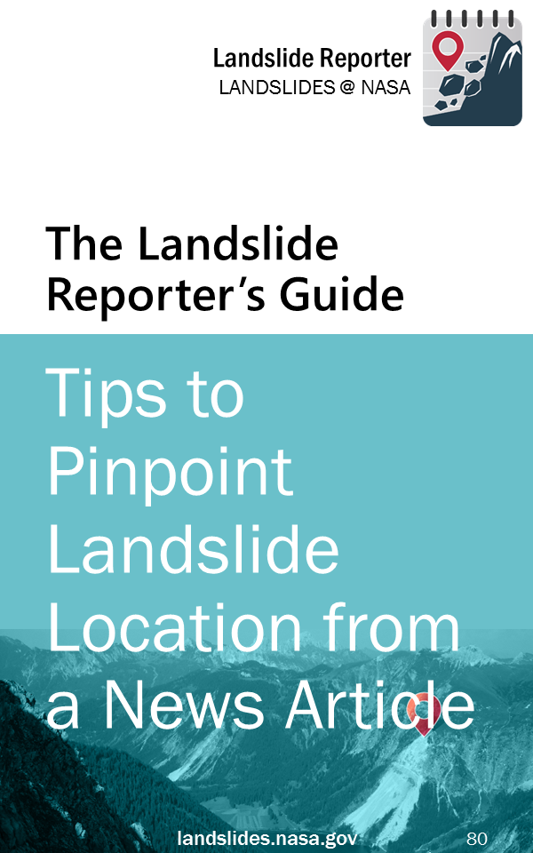

In order to build a more comprehensive, worldwide inventory of landslides, we need you.
Building a global landslide inventory is not an easy task and cannot be accomplished without citizen science. As a citizen scientist, you play a transformational role in improving landslide science. Our goal is to collect as many landslides as we can to enable better research, modeling, prediction, and response.
Open Landslide Reporter »The Reporting Process
The main steps to the submission process are:

- Landslide occurs: A landslide event (see definition in the Primer) occurs and is reported in a newspaper article, online database, or in your local area.
- Submit to Landslide Reporter: Using Landslide Reporter, you can add this event to the landslide inventory and describe its setting, impacts, and details. The Add a Landslide Event Guide takes you through this process step-by-step. Other guides below have additional information. When investigating a landslide, the most important thing is to be in a safe place! Do not conduct field work or look at a landslide up close unless you are an expert.
- Approval: Our team at NASA checks the incoming landslide reports for accuracy and detail.
- View Your Landslide: Once approved, your landslide event appears publicly on Landslide Viewer alongside other landslide inventories.
- Download and Use: Scientists and the public can download the landslide data from Landslide Viewer. The data is used for validating scientific models like NASA's Landslide Hazard Assessment for Situational Awareness (LHASA) model, scientific research, or policy work.
Using the Application
Landslide Reporter is the submission portal for COOLR. When you find a landslide event through a news article or in-person, you can open the web application to add information about the location, date, type of landslide, and other details about the event in Landslide Reporter.
For more information on how to navigate Landslide Reporter, click here.
How-to Guides
Are you ready to contribute to COOLR? Reviewing the How-to Guides below will help you make a better submission to the inventory as you browse through basic information on landslides, hone your skills at identifying landslides, step through the report process, and follow tips on pinpointing a landslide’s location.
You can access the application at landslides.nasa.gov/reporter. And remember, when investigating a landslide, the most important thing is to be in a safe place! Do not conduct field work or look at a landslide up close unless you are an expert.
|  | Primer and Landslide Identification The basics of landslides and why we study them. For those who are new to landslides, you can read about how to identify landslide types, from rock falls to creeps. |
|  | Landslide Identification Training Train your eye to identify landslides by their type and size in preparation for submitting using Landslide Reporter. An image and description is displayed on each page and its respective size and categorizations on the following page. Use the classification and size charts from the Landslide Primer chapter to help identify. |
|  | Add a Landslide Event to COOLR The step-by-step instructions for submitting a landslide event to COOLR. Let this guide walk you through everything from finding a landslide to how to fill out each category, and then how to go back and review your submissions. |
|  | Tips to Pinpoint Landslide Location from a News Article When reporting landslides from a news article, it may be challenging to find exactly where the landslide occurred. This guide gives suggestions on how to use keywords to hone in on the location, discusses location accuracy, and shows how to use Google Maps or Google Earth to your advantage. |
For even more information about landslides and safety, browse the Related Sites page in Resources.
Related Pages
Connect with Us
Twitter: @LandslideReport
Facebook: LandslideReporter
SciStarter: Join us on our project page
Connect with the Community
Google Groups: Landslide Reporter Community
Contact Us
For any questions related to this system, please contact landslide_support@nccs.nasa.gov.